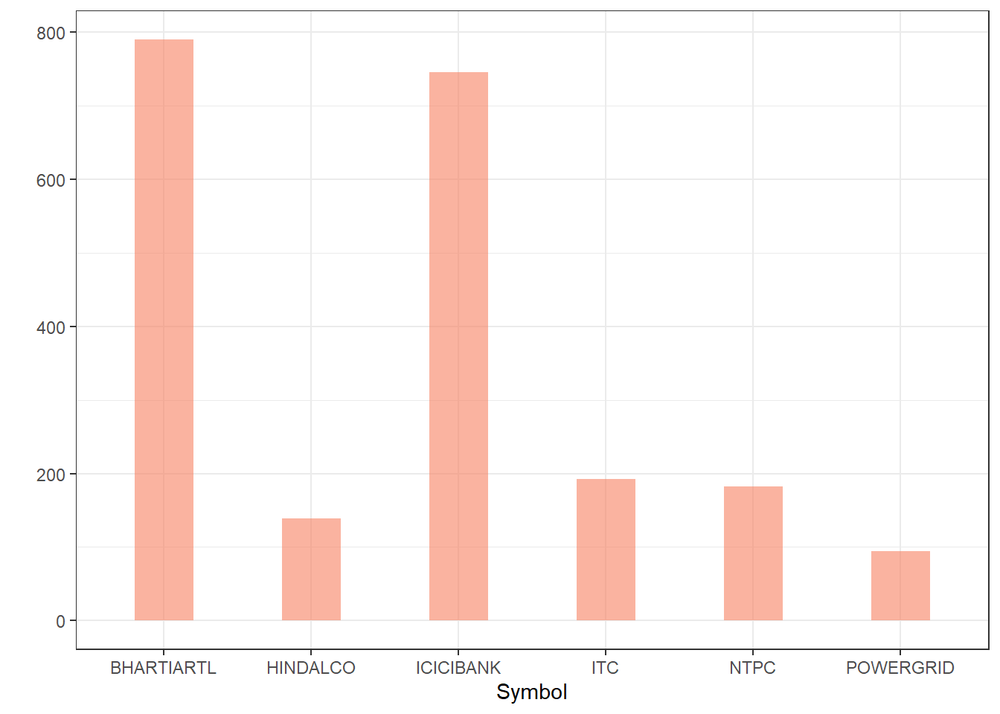
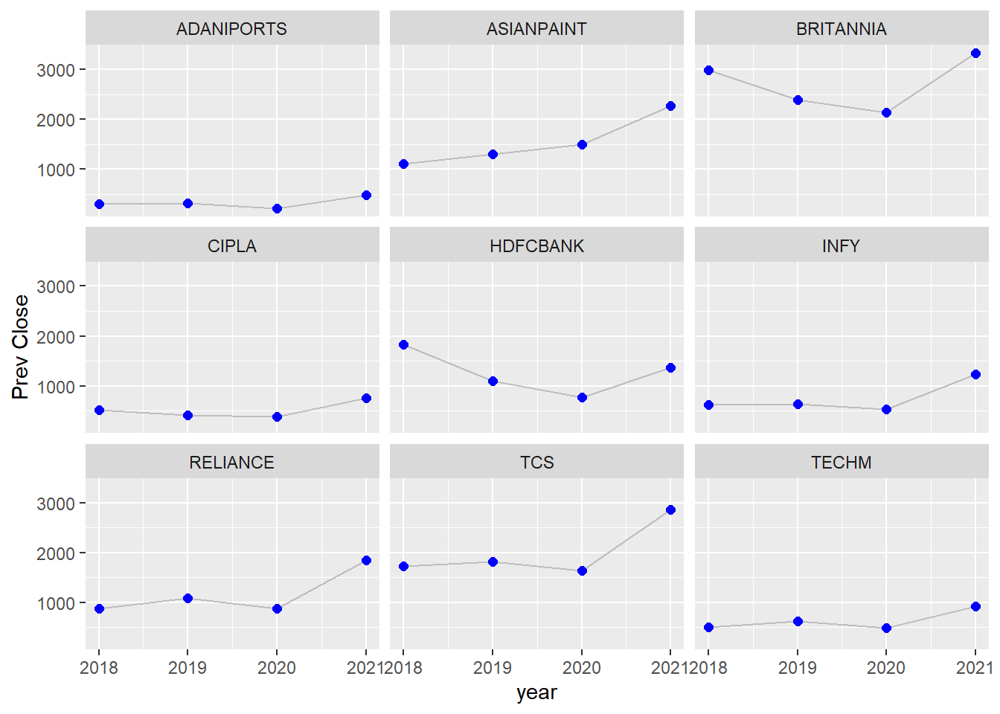

Code
library(tidyverse)
library(ggplot2)
library(forcats)
library(lubridate)
library(hrbrthemes)
library(plotly)
knitr::opts_chunk$set(echo = TRUE, warning = FALSE, message = FALSE)library(tidyverse)
library(ggplot2)
library(forcats)
library(lubridate)
library(hrbrthemes)
library(plotly)
knitr::opts_chunk$set(echo = TRUE, warning = FALSE, message = FALSE)library(tidyverse)
library(ggplot2)
library(forcats)
library(lubridate)
library(hrbrthemes)
library(plotly)
knitr::opts_chunk$set(echo = TRUE, warning = FALSE, message = FALSE)Stock is also refered to as securities
Description of columns in the file:
Date — Date of trade
symbol — Name of the company
Series — We have only one series - EQ, which stands for Equity.
Prev Close — Refers to the final price of a stock of the previous dat when the market officially closes, which is at 3:30pm IST
Open — The open is the starting period of trading on a securities exchange or organized over-the-counter market.
High — Highest price at which a stock traded during the course of the trading day.
Low — Lowest price at which a stock traded during the course of the trading day.
Last — The last price of a stock is just one price to consider when buying or selling shares. The last price is simply the most recent one
Close — The close is a reference to the end of a trading session in the financial markets when the markets close for the day.
VWAP (Volume-weighted average price)- It is the ratio of the value traded to total volume traded over a particular time horizon. It is a measure of the average price at which a stock is traded over the trading horizon
Volume — It is the amount of a security that was traded during a given period of time
Turnover -It is a measure of sellers versus buyers of a particular stock. It is calculated by dividing the daily volume of a stock by the “float” of a stock, which is the number of shares available for sale by the general trading public.
Trades- The number of shares being traded on a given day is called trading volumes
Deliverable Volume — quantity of shares which actually move from sellers to buyers
%Deliverable — shares which are actually transferred from one person’s to another’s demat account.
There are multiple .csv files, one for each stock, which are placed in a folder. I am reading data from all the csv files and combining them into a single data-frame using purrr package.
# Read all the CSV files at once
all_stocks <- dir("_data/NIFTY_AdithyaParupudi/", full.names = TRUE) %>% map_dfr(read_csv, )
all_stocks <- tibble(all_stocks)str(all_stocks)tibble [235,192 × 15] (S3: tbl_df/tbl/data.frame)
$ Date : Date[1:235192], format: "2007-11-27" "2007-11-28" ...
$ Symbol : chr [1:235192] "MUNDRAPORT" "MUNDRAPORT" "MUNDRAPORT" "MUNDRAPORT" ...
$ Series : chr [1:235192] "EQ" "EQ" "EQ" "EQ" ...
$ Prev Close : num [1:235192] 440 963 894 884 922 ...
$ Open : num [1:235192] 770 984 909 890 940 ...
$ High : num [1:235192] 1050 990 915 958 995 ...
$ Low : num [1:235192] 770 874 841 890 922 ...
$ Last : num [1:235192] 959 885 887 929 980 ...
$ Close : num [1:235192] 963 894 884 922 969 ...
$ VWAP : num [1:235192] 985 941 888 929 966 ...
$ Volume : num [1:235192] 27294366 4581338 5124121 4609762 2977470 ...
$ Turnover : num [1:235192] 2.69e+15 4.31e+14 4.55e+14 4.28e+14 2.88e+14 ...
$ Trades : num [1:235192] NA NA NA NA NA NA NA NA NA NA ...
$ Deliverable Volume: num [1:235192] 9859619 1453278 1069678 1260913 816123 ...
$ %Deliverble : num [1:235192] 0.361 0.317 0.209 0.274 0.274 ...
- attr(*, "spec")=
.. cols(
.. Date = col_date(format = ""),
.. Symbol = col_character(),
.. Series = col_character(),
.. `Prev Close` = col_double(),
.. Open = col_double(),
.. High = col_double(),
.. Low = col_double(),
.. Last = col_double(),
.. Close = col_double(),
.. VWAP = col_double(),
.. Volume = col_double(),
.. Turnover = col_double(),
.. Trades = col_double(),
.. `Deliverable Volume` = col_double(),
.. `%Deliverble` = col_double()
.. )
- attr(*, "problems")=<externalptr> Looks like the last column has a spelling mistake. I am correcting it to prevent further confusion. `%Deliverble` changed to Percent_Deliverable
The last column has a spelling mistake. Changing that to Percent_Deliverable to avoid confusion
all_stocksv2 <- all_stocks %>% rename(Percent_Deliverable = `%Deliverble`)
colnames(all_stocksv2) [1] "Date" "Symbol" "Series"
[4] "Prev Close" "Open" "High"
[7] "Low" "Last" "Close"
[10] "VWAP" "Volume" "Turnover"
[13] "Trades" "Deliverable Volume" "Percent_Deliverable"The date format is yyyy/mm/dd. I only want the year aspect, so creating a new column with just that. A new column ‘yy’ has been created, which is the last column
# x has all the modified values
x<-format(as.Date(all_stocksv2$Date, format="%Y/%m/%d"))
# all_stocks_yy has thethe replaced date column with the new col - 'yy'
all_stocks_yy <- all_stocksv2 %>%
mutate(yy=year(x)) %>%
select(-Date)
print(all_stocks_yy)# A tibble: 235,192 × 15
Symbol Series Prev C…¹ Open High Low Last Close VWAP Volume Turno…²
<chr> <chr> <dbl> <dbl> <dbl> <dbl> <dbl> <dbl> <dbl> <dbl> <dbl>
1 MUNDRAPORT EQ 440 770 1050 770 959 963. 985. 2.73e7 2.69e15
2 MUNDRAPORT EQ 963. 984 990 874 885 894. 941. 4.58e6 4.31e14
3 MUNDRAPORT EQ 894. 909 915. 841 887 884. 888. 5.12e6 4.55e14
4 MUNDRAPORT EQ 884. 890 958 890 929 922. 929. 4.61e6 4.28e14
5 MUNDRAPORT EQ 922. 940. 995 922 980 969. 966. 2.98e6 2.88e14
6 MUNDRAPORT EQ 969. 985 1056 976 1049 1041. 1015. 4.85e6 4.92e14
7 MUNDRAPORT EQ 1041. 1061 1100. 1050 1084 1082. 1083. 2.85e6 3.08e14
8 MUNDRAPORT EQ 1082. 1089 1110. 1051 1090. 1081. 1087. 1.75e6 1.90e14
9 MUNDRAPORT EQ 1081. 1100 1134 1078 1100 1102. 1107. 2.25e6 2.49e14
10 MUNDRAPORT EQ 1102. 1110 1110 1061. 1074. 1075. 1080. 1.01e6 1.09e14
# … with 235,182 more rows, 4 more variables: Trades <dbl>,
# `Deliverable Volume` <dbl>, Percent_Deliverable <dbl>, yy <dbl>, and
# abbreviated variable names ¹`Prev Close`, ²Turnover
# ℹ Use `print(n = ...)` to see more rows, and `colnames()` to see all variable namesBy running the summary command we see that Trades, Deliverable Volume and Percent_Deliverables have a lot of missing values. Since they are all numeric, I’m replacing them with 0 to avoid calculation errors.
print(summarytools::dfSummary(all_stocks_yy,
varnumbers = FALSE,
plain.ascii = FALSE,
style = "grid",
graph.magnif = 0.70,
valid.col = FALSE),
method = 'render',
table.classes = 'table-condensed')| Variable | Stats / Values | Freqs (% of Valid) | Graph | Missing | |||||||||||||||||||||||||||||||||||||||||||||||||||||||
|---|---|---|---|---|---|---|---|---|---|---|---|---|---|---|---|---|---|---|---|---|---|---|---|---|---|---|---|---|---|---|---|---|---|---|---|---|---|---|---|---|---|---|---|---|---|---|---|---|---|---|---|---|---|---|---|---|---|---|---|
| Symbol [character] |
|
|
 |
0 (0.0%) | |||||||||||||||||||||||||||||||||||||||||||||||||||||||
| Series [character] | 1. EQ |
|
 |
0 (0.0%) | |||||||||||||||||||||||||||||||||||||||||||||||||||||||
| Prev Close [numeric] |
|
63729 distinct values |  |
0 (0.0%) | |||||||||||||||||||||||||||||||||||||||||||||||||||||||
| Open [numeric] |
|
44298 distinct values | |
0 (0.0%) | |||||||||||||||||||||||||||||||||||||||||||||||||||||||
| High [numeric] |
|
49036 distinct values |  |
0 (0.0%) | |||||||||||||||||||||||||||||||||||||||||||||||||||||||
| Low [numeric] |
|
51335 distinct values |  |
0 (0.0%) | |||||||||||||||||||||||||||||||||||||||||||||||||||||||
| Last [numeric] |
|
48570 distinct values |  |
0 (0.0%) | |||||||||||||||||||||||||||||||||||||||||||||||||||||||
| Close [numeric] |
|
63739 distinct values | |
0 (0.0%) | |||||||||||||||||||||||||||||||||||||||||||||||||||||||
| VWAP [numeric] |
|
138831 distinct values |  |
0 (0.0%) | |||||||||||||||||||||||||||||||||||||||||||||||||||||||
| Volume [numeric] |
|
220434 distinct values |  |
0 (0.0%) | |||||||||||||||||||||||||||||||||||||||||||||||||||||||
| Turnover [numeric] |
|
235184 distinct values |  |
0 (0.0%) | |||||||||||||||||||||||||||||||||||||||||||||||||||||||
| Trades [numeric] |
|
79112 distinct values |  |
114848 (48.8%) | |||||||||||||||||||||||||||||||||||||||||||||||||||||||
| Deliverable Volume [numeric] |
|
199963 distinct values |  |
16077 (6.8%) | |||||||||||||||||||||||||||||||||||||||||||||||||||||||
| Percent_Deliverable [numeric] |
|
9456 distinct values |  |
16077 (6.8%) | |||||||||||||||||||||||||||||||||||||||||||||||||||||||
| yy [numeric] |
|
22 distinct values |  |
0 (0.0%) |
Generated by summarytools 1.0.1 (R version 4.2.1)
2022-09-03
#replacing NA with 0's
all_stocks_yy[is.na(all_stocks_yy)] <- 0
# counting the NA's after replacing them with 0's
sum(is.na(all_stocks_yy$Trades))[1] 0NIFTY50 is supposed to be the top 50 stocks of the financial year(there must be 50 distinct stocks in the data set). This data from 2000 to 2021 is not consistent, i.e., there are 65 distinct entries found. Which suggests that some stocks under-performed and got replaced with new ones over time.
all_stocks_yy %>% select(1) %>% distinct()# A tibble: 65 × 1
Symbol
<chr>
1 MUNDRAPORT
2 ADANIPORTS
3 ASIANPAINT
4 UTIBANK
5 AXISBANK
6 BAJAJ-AUTO
7 BAJAJFINSV
8 BAJAUTOFIN
9 BAJFINANCE
10 BHARTI
# … with 55 more rows
# ℹ Use `print(n = ...)` to see more rowsWe can infer from the mean of Volume column, the number of stocks sold each year kept increasing.
This can hint an increase in demat accounts and number of active trading as well.
New stocks must have entered the NIFTY50 index, and started performing well over the years
Special attention can be paid to volumes of stock sold between 2007 - 2009 and 2019 - 2021. There is a sharp increase in
# Mean of all volumes grouped by years.
# between 2008 to 2009 and 2019 to 2020 there is a big increase in stock volumes. 2008 point to the stock market crash. 2019-2021 point to the covid-19 crisis, where stock market fell sharply and attracted more people in investing in stocks.
all_stocks_yy %>%
group_by(yy) %>%
select(`Volume`) %>%
summarise_all(mean, na.rm=TRUE) # A tibble: 22 × 2
yy Volume
<dbl> <dbl>
1 2000 795317.
2 2001 782304.
3 2002 635197.
4 2003 1145646.
5 2004 1562821.
6 2005 1099397.
7 2006 1208818.
8 2007 1370318.
9 2008 1695820.
10 2009 2372692.
# … with 12 more rows
# ℹ Use `print(n = ...)` to see more rowsBy running the below code, I am checking whether a stock has maintained its consistency in the top 50 stocks. Looks like the top 50 stocks kept changing each year, and some stocks were not present in the list. The stocks not present in that year can be identified with 0 ( a metric for the sum of all shares sold in a year)
Some observations that can be made here :
all_stocks_yy %>%
pivot_wider(names_from=`yy`, values_from = `Volume`) %>%
group_by(Symbol) %>% select(Trades, 14:35) %>%
summarise_all(sum, na.rm=TRUE) %>%
relocate(`2000`:`2006`, .before = `2007`)# A tibble: 65 × 24
Symbol Trades `2000` `2001` `2002` `2003` `2004` `2005` `2006` `2007` `2008`
<chr> <dbl> <dbl> <dbl> <dbl> <dbl> <dbl> <dbl> <dbl> <dbl> <dbl>
1 ADANIP… 1.08e8 0 0 0 0 0 0 0 0 0
2 ASIANP… 1.02e8 3.55e6 4.45e6 3.99e6 6.10e6 7.93e6 8.78e6 7.61e6 9.96e6 8.48e6
3 AXISBA… 2.96e8 0 0 0 0 0 0 0 6.71e7 5.79e8
4 BAJAJ-… 6.75e7 0 0 0 0 0 0 0 0 3.07e7
5 BAJAJF… 5.13e7 0 0 0 0 0 0 0 0 5.30e7
6 BAJAUT… 0 6.06e5 2.69e5 1.06e6 2.68e6 3.60e6 4.07e6 2.32e6 3.96e6 6.42e6
7 BAJFIN… 1.39e8 0 0 0 0 0 0 0 0 0
8 BHARTI 0 0 0 9.55e7 3.23e8 8.80e8 4.36e8 8.82e7 0 0
9 BHARTI… 2.09e8 0 0 0 0 0 0 1.21e8 4.55e8 9.59e8
10 BPCL 1.37e8 2.12e7 5.39e7 3.90e8 3.51e8 2.27e8 1.12e8 1.10e8 1.27e8 1.66e8
# … with 55 more rows, and 13 more variables: `2009` <dbl>, `2010` <dbl>,
# `2011` <dbl>, `2012` <dbl>, `2013` <dbl>, `2014` <dbl>, `2015` <dbl>,
# `2016` <dbl>, `2017` <dbl>, `2018` <dbl>, `2019` <dbl>, `2020` <dbl>,
# `2021` <dbl>
# ℹ Use `print(n = ...)` to see more rows, and `colnames()` to see all variable namesThere are 6 stocks which did not enter the stock market - ADANIPORTS, HEROMOTOCO, INFY,SSLT,UPL, VEDL. They were not publicly listed in to be traded, as they were still in the developmental phases. A company enters stock market once it has captured enough market in an area, and wants to expand its operations and brand to a larger scale.
all_stocks_yy %>%
pivot_wider(names_from=`yy`, values_from = `Volume`) %>%
group_by(Symbol) %>% select(Trades, 14:35) %>%
summarise_all(sum, na.rm=TRUE) %>%
relocate(`2000`:`2006`, .before = `2007`) %>%
select(`Symbol`, `2000`:`2010`) %>%
filter(across(`2000`:`2010`, ~ . ==0)) %>%
select(Symbol)# A tibble: 6 × 1
Symbol
<chr>
1 ADANIPORTS
2 HEROMOTOCO
3 INFY
4 SSLT
5 UPL
6 VEDL ZEETELE - Best performing stock in 2000, AJAUTOFIN - Worst performing stock 2000
#best performing stock
all_stocks_yy %>%
group_by(yy, Symbol) %>%
select(`Volume`) %>%
summarise_all(sum, na.rm=TRUE) %>%
arrange(desc(Volume)) %>%
slice(1)# A tibble: 22 × 3
# Groups: yy [22]
yy Symbol Volume
<dbl> <chr> <dbl>
1 2000 ZEETELE 2124967599
2 2001 ZEETELE 2136706114
3 2002 ZEETELE 1402554565
4 2003 TISCO 1674239842
5 2004 TISCO 2026827972
6 2005 RELIANCE 1423512801
7 2006 ITC 1495441954
8 2007 POWERGRID 1985771033
9 2008 NTPC 1988073378
10 2009 TATASTEEL 2577318306
# … with 12 more rows
# ℹ Use `print(n = ...)` to see more rows#worst performing stock
all_stocks_yy %>%
group_by(yy, Symbol) %>%
select(`Volume`) %>%
summarise_all(sum, na.rm=TRUE) %>%
arrange(Volume) %>%
slice(1)# A tibble: 22 × 3
# Groups: yy [22]
yy Symbol Volume
<dbl> <chr> <dbl>
1 2000 BAJAUTOFIN 606464
2 2001 BAJAUTOFIN 269290
3 2002 BAJAUTOFIN 1059613
4 2003 BRITANNIA 2557859
5 2004 BRITANNIA 3351970
6 2005 BRITANNIA 1998097
7 2006 BRITANNIA 1503856
8 2007 BRITANNIA 2629574
9 2008 BRITANNIA 1561330
10 2009 BRITANNIA 1754997
# … with 12 more rows
# ℹ Use `print(n = ...)` to see more rowsp<-all_stocks_yy %>%
select(Symbol, yy, `Prev Close`) %>%
filter(Symbol == "ZEETELE" | Symbol == "BAJAUTOFIN") %>%
group_by(yy, Symbol) %>%
summarize_all(mean, na.rm = TRUE) %>%
pivot_wider(names_from = Symbol, values_from = `Prev Close`) %>%
ggplot()+
geom_line(aes(x=yy, y=BAJAUTOFIN), color='red') +
geom_point(aes(x=yy, y=BAJAUTOFIN),size=1.5, color='red') +
geom_line(aes(x=yy, y=ZEETELE), color='blue') +
geom_point(aes(x=yy, y=ZEETELE),size=1.5, color="blue") +
labs(title='ZEETELE - Stock performance', x="Year", y="Previous Close") + theme_bw()
ggplotly(p)whuch stock dipped the most in 2008? and during covid?
stocks_2008 <- all_stocks_yy %>% filter(`yy` == 2008) %>%
select(yy, Symbol, VWAP , Trades, `Deliverable Volume`, `Prev Close`) %>%
group_by(Symbol,yy) %>%
summarise_all(mean, na.rm=TRUE) %>%
ungroup() %>%
arrange(desc(`Deliverable Volume`)) %>%
head()
stocks_2008 %>% ggplot(aes(x=VWAP, y=Symbol)) +
geom_bar(stat="identity", fill="#f68060", alpha=.6, width=.4) +
coord_flip() +
xlab("") +
theme_bw()
Which stock dipped the most during the corona virus pandemic? Lets check the stock prices of top 5 shares between 2019-2021
stocks_covid <- all_stocks_yy %>%
filter(`yy` == 2018 | `yy` == 2019 | `yy` == 2020 |`yy` == 2021) %>%
select(yy, Symbol, VWAP , Trades, `Deliverable Volume`) %>%
group_by(Symbol,yy) %>%
summarise_all(mean, na.rm=TRUE) %>%
head(20)
stocks_covid %>% ggplot( aes(x=yy, y=VWAP, label = yy)) +
geom_line( color="grey") +
geom_point(shape=21, color="blue", fill="#69b3a2", size=2) +
facet_wrap(~Symbol,nrow = 2) +
theme_ipsum() +
ggtitle("Stock dip during COVID-19")
This project has been a great learning experience for me. It was interesting to see how many insights can be derived from a single data set. I felt I barely scratched the surface of this goldmine. I used to follow stock market trends for a while, which got me interested to try this do an EDA of this data-set. My current regret is, there are lot of amazing insights and visualizations that I could do, but I didn’t know how to manipulate multiple variables to make it happen.
I faced challenges with almost every aspect of this project. I’ve been going back to my notes, stackoverflow and a bunch of youtube videos to get clarity. I made use of really good websites and bookmarked some of the solutions for future reference. There is a lot of power in R and it made me realize I could really do a lot more with it.
I’ve made use of other packages apart from the standard ones taught in the class, and tried resolving multiple errors by fine-tuning the functions. There is still a lot more to learn, and I will continue learning to be better at visualization.
I got some clarity on the highs and lows of the stock market
Downloaded dataset from kaggle - https://www.kaggle.com/datasets/rohanrao/nifty50-stock-market-data